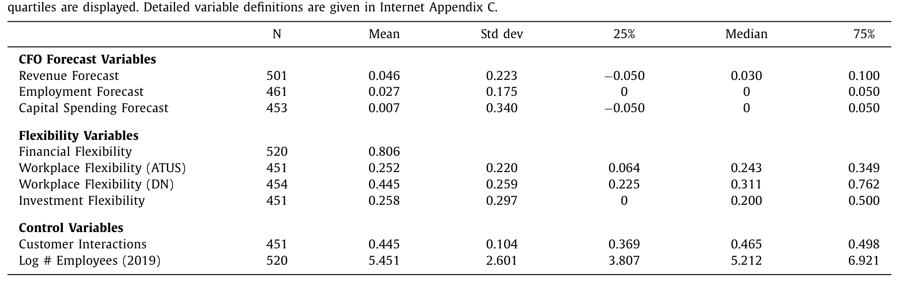
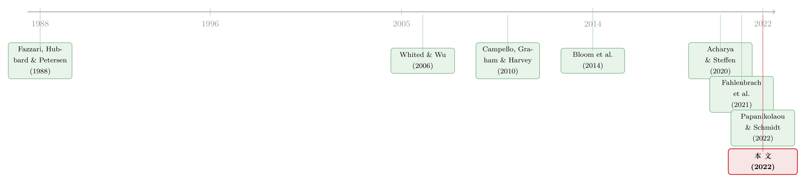

危机来了，灵活的公司「灵活」在哪？——把企业的应变能力拆成三种
本文读的是 Barry, Campello, Graham & Ma (2022, Journal of Financial Economics)：作者用一连串 CFO 问卷，把企业在危机中的「灵活性」拆成三种——财务灵活性、工作场所灵活性、投资灵活性——并发现 2020 年真正改写就业与投资的那一维，是过去文献几乎从不讨论的「能不能远程办公」。它不仅决定了疫情当下谁敢继续招人，还在悄悄重塑投资的形态与劳动力的未来。
1 引言：危机是一面照妖镜
每隔几年，经济就会被一记意外的重击打得趔趄。2008 年是信贷骤停，2020 年是一种谁也没见过的病毒。每一次冲击落下，总有一批公司稳稳站住、甚至趁势扩张，也总有一批公司收缩、裁员、把投资计划锁进抽屉。
于是一个老问题被反复问起：究竟是什么，让有的公司在风暴里依旧能「动」？
过去几十年，金融学给出的答案高度一致，那就是 财务灵活性（financial flexibility）——手里有没有现金、能不能借到钱。Fazzari, Hubbard & Petersen (1988) 开了「融资约束（financing constraints）」研究的先河；Chodorow-Reich (2014) 用 2008 年金融危机的数据证明，融资约束更松的企业，把就业维持得更稳；到了 2020 年，Acharya & Steffen (2020) 又记录了疫情初期企业那场著名的「现金抢购（dash for cash）」。这条线索清晰、扎实，几乎已经成了常识。
但 2022 年这篇论文想说的是：财务灵活性只是故事的一部分。 2020 年的这场健康危机，把一种过去从未被认真对待的灵活性推上了舞台中央——员工能不能在家办公。一家会计师事务所和一家餐馆，即使现金一样厚，在「全员居家」的那几个月里，命运也会天差地别。
接着，一个自然的问题就来了：如果「灵活性」其实是多维的，那这几个维度各自起什么作用？它们之间又会不会互相牵制、互相放大？这正是本文要回答的核心。
2 一个核心：把「灵活性」拆成三种
整篇论文其实只围绕一件事在打转——企业的应变能力（the ability of firms to adjust and adapt）不是一个标量，而是一个向量。 作者把它拆成三条边：
- 财务灵活性（financial flexibility）：手头内部资金是否充裕、外部融资是否可得。这是被研究得最透的一维。
- 工作场所灵活性（workplace flexibility）：员工在多大程度上可以远程办公、维持社交距离仍照常产出。这是本文的新意所在。
- 投资灵活性（investment flexibility）：企业能不能灵活地推迟或加快资本开支的时点——注意，是时点的灵活，而不是规模的可调。
第三维和传统的「投资调整成本（investment adjustment costs）」不是一回事。Cooper & Haltiwanger (2006) 综述的那套调整成本，关心的是「改变投资规模」要花多少代价；而本文的投资灵活性关心的是「改变投资节奏」——危机里能不能把一个大项目往后压一压、或者趁势抢先上马。在一场突如其来的冲击面前，能否「择时」，才是关键。
把三维摆齐之后，作者要回答的就不再是「财务灵活性重不重要」（那已是定论），而是：当三种灵活性同时在场，谁主导了就业、谁主导了投资，它们又怎样交织在一起。 这个「同时」和「交织」，是本文区别于以往所有 COVID 研究的地方。
3 数据：直接去问 CFO
要研究企业在危机里的「内部计划」，最大的难处是——计划是藏在管理层脑子里的，财务报表要等很久才看得到。本文的办法很直接：趁危机正在发生，去问 CFO 本人。
作者依托杜克大学的 Global Business Outlook 调查，在 2020 年 2 月中旬到 4 月中旬 之间向美国 CFO 发出问卷——邮件邀请始于 2 月 11 日，那时新冠还没在美国大面积扩散；问卷在 4 月 10 日关闭。因为时间正好压在 3 月，作者称之为「March 2020 问卷」。最终回收了 520 份 CFO 回复，总体回应率 19.5%——对一份高管问卷来说，这是相当高的数字（杜克以往 CFO 问卷的回应率约 9%）。样本覆盖几乎所有行业、50 个州里的 47 个，既有大公司也有中小企业，既有上市公司也有私人企业。
随后，作者又在 6 月、9 月、12 月 追加了三轮问卷（与亚特兰大联储、里士满联储合作），合计近 650 家公司参与。9 月问卷问的是「各项指标何时回到疫情前水平」，12 月问卷专门探讨自动化。这样一来，作者既抓住了冲击落地那一刻的实时计划，又能用后几轮追踪计划的兑现，还能窥见企业对后疫情时代的长期预期。
三种灵活性是怎么量出来的？
财务灵活性直接问 CFO：「你公司现在大概有多少财务灵活性？（0-没有，1-一点点，2-3-4-中等，5-很多）」，回答 ≥2 即归为「有财务灵活性」。样本里约 20% 的公司被归为低财务灵活性。
投资灵活性借自 2019 年 3 月（疫情前）的一轮问卷，问的是「你完成最大资本投资项目的速度有多灵活？（0-非常灵活 … 6-非常不灵活）」，回答 0 或 1 算「高投资灵活性」。作者把它聚合到四位数 NAICS 行业层面——值得一提的是，仅四位数 NAICS 固定效应就能解释这个变量 R² = 0.45，说明投资灵活性有很强的「行业属性」。
工作场所灵活性则不靠问卷，而是用外部数据：用 American Time Use Survey（ATUS）算出每个四位数 NAICS 行业里能够、并且确实在家办公的员工比例，再用 Dingel & Neiman (2020) 基于 O*NET 的可远程办公比例做交叉验证。对一个平均的样本公司，所在行业里约 25% 的员工可以远程办公。这些都是疫情前构造的事前度量，作者拿它们和 BLS 在 2020 年 5 月后逐月公布的实际远程办公比例对照，相关性高达约 80%——也就是说，疫情虽然把在家办公的总体水平整体抬高了（脚注里提到，主要在家办公的雇员占比从 1980 年的 0.8%、2010 年的 2.4%、2018 年的 4%，一路在 2020 年 5 月冲到约 40%），但行业之间的横截面排序几乎没变。事前度量因此是可信的。
此外，作者还用 BEA 的投入-产出表，构造了「直接客户接触」与「沿供应链传导的间接客户接触」，用来控制各行业受需求萎缩冲击的程度——餐饮零售直接接触高、制造业间接接触高。
下表汇报了 March 2020 问卷的主要描述性统计。

Table 1
4 识别策略：这其实不是一场「自然实验」
读到这里，做实证的读者一定会皱眉：问卷数据、横截面相关，这能谈「识别」吗？
诚实地说，本文不是一个干净的因果设计——没有断点、没有工具变量、没有随机分配的处理组。它的可信度，是靠三层「外部检验」一点点垒起来的：
第一层，时间上的兑现。 作者用 6、9、12 月的后续问卷，检验 3 月那一刻的计划是否真的落地。事前的「计划」和事后的「实现」方向一致，说明 CFO 报告的不是空话。
第二层，档案数据的对账。 作者把问卷结论拿到 Compustat（以及 BLS 的就业数据）里复核，用真实的就业和资本开支再验一遍。
第三层，也是最精彩的一层——用 2008 年危机当「安慰剂」。 这是全文识别逻辑的点睛之笔。如果「工作场所灵活性」真是 2020 这场健康危机所特有的，那它在 2008 那场信贷危机里就不该起作用。作者借来 Campello, Graham & Harvey (2010) 当年那场金融危机的 CFO 问卷数据，发现：
- 财务灵活性在两场危机里对就业和投资的影响相似——它是个「通用」维度；
- 而工作场所灵活性在 2008 年完全不起作用；投资灵活性当年也没有被显著动用（至少没有和工作场所灵活性配合起来用）。
为进一步坐实，作者还用历史 Compustat 和 BLS 数据证明：在 2020 年之前的 15 年里，工作场所灵活性对企业的就业和投资都没有显著影响。一前一后，把「这是新冠危机独有的现象」这件事钉死了。
但读者要清楚边界：上述检验能排除「这只是普遍的危机规律」，却无法排除「行业层面的遗漏变量」。工作场所灵活性是按行业匹配上去的，它可能和别的行业特征（需求弹性、技能结构、产品可数字化程度）纠缠在一起。作者用「客户接触度」等变量去控制需求冲击，但这终究是控制变量，而非外生冲击。所以更稳妥的读法是：本文给出的是条件相关与交互模式，而非严格的因果系数。
5 主要结果：谁主导就业，谁主导投资
把三维放进同一张回归表，故事就清晰了。
第一，财务灵活性照常重要，而且偏爱「固定成本高」的公司。 财务灵活性更高的企业，2020 年计划中的就业和资本开支增速都更高——这与 Fahlenbrach, Rageth & Stulz (2021)、Ramelli & Wagner (2020) 发现「财务灵活的公司股价表现更好」一脉相承。更有意思的是，财务灵活性对就业的提振，在固定成本高的公司里显著更强。直觉很顺：如果成本几乎全是固定的，危机里收入塌了、成本却塌不下来，这时手里有现金才格外救命；反过来，成本若都是可变的，收入下滑时成本也跟着下滑，对额外现金的渴求就没那么强。
第二，工作场所灵活性是就业的「新主角」，却不直接拉动投资。 工作场所灵活性更高的公司，计划中的就业增长显著更高——这呼应了 Papanikolaou & Schmidt (2022)、Favilukis et al. (2020) 在股价层面的发现。但耐人寻味的是，它并不直接提升资本开支计划。作者后文给出的解读是：远程办公会让传统的实体资本投资变得「不那么相关」。
第三，也是最关键的一步——工作场所灵活性决定了企业「怎么用」投资灵活性。 单看投资灵活性，方向是模糊的；但一旦和工作场所灵活性交互，就裂成了两半：
- 工作场所灵活性高的公司，危机里仍能相对顺畅地运转，于是把投资灵活性用来增加资本开支——趁势出手；
- 工作场所灵活性低的公司，处境艰难，于是把投资灵活性用来削减、推迟资本开支——按下暂停。
同一种「择时能力」，在两类公司手里走向了完全相反的方向。这正是「拆成三维、再看交互」才能看见的图景——任何单看一维的研究都会把它平均掉、从而错过。
于是反转出现在长期。作者用 9 月、12 月的问卷追问后疫情计划，发现：工作场所灵活性高的公司，预期就业恢复得更快、资本开支恢复得更慢，并预期远程办公会持续更久——它们似乎正从「投资于实体资产」转向「投资于人和无形资产」，去支撑灵活协作。而工作场所灵活性低的公司、以及大公司，更倾向于上自动化（automation）来减少对劳动力的依赖；进一步看，低技能工人最容易被替代，且低工作场所灵活性的公司表现出更强的「替换低技能工人」的倾向。
这条「工作场所灵活性 → 自动化 → 低技能工人被替代」的链条，是本文留给劳动经济学的一份遗产。它意味着 2020 这场冲击对就业的影响，可能不是一次性的，而是被自动化「锁定」成了长期变化。关于「机器换人」如何反过来给被替代工人的股票定价，可参见《机器换人，为什么「被换的人」手里的股票反而更贵？》。
6 一个简单的模型框架（直觉版）
为了把直觉摆正，作者在实证之前先搭了一个简单的模型框架，用来说明三种灵活性如何各自作用于企业的真实决策。这里我不杜撰它的具体方程（论文正文里这部分被截断，原始符号无从核对），只把它的比较静态逻辑讲清楚：
- 财务灵活性作用在「预算约束」这一侧：现金更多、融资更易，意味着企业的资金约束更松，于是能支撑更多的就业与投资。这一项的边际作用，会随企业固定成本的上升而放大——固定成本越高，危机里「现金覆盖固定开支」的价值越大。
- 工作场所灵活性作用在「生产函数」这一侧：能远程办公的企业，在社交距离约束下仍能保持产出、降低健康风险，于是更愿意维持甚至扩张就业。
- 投资灵活性作用在「时点选择」这一侧：它给了企业一个择时期权——条件不利就推迟、条件有利就加速。这个期权值多少钱，取决于企业当下处境好不好，而处境好不好，又被工作场所灵活性决定。于是模型自然导出了实证里那个交互效应：高工作场所灵活性 × 高投资灵活性 → 加码投资；低 × 高 → 推迟投资。
这个框架补全了 Acharya, Almeida, Amihud & Liu (2021) 那条「企业在财务对冲与运营对冲之间权衡」的思路——本文强调的是，多个计划维度在疫情冲击落地后同时被重新安排。
7 文献脉络：从「有没有钱」到「能不能远程」
把这篇论文放回历史里看，它处在三条支流的交汇处。
第一条，融资约束与财务灵活性。 从 Fazzari, Hubbard & Petersen (1988) 提出融资约束、到 Whited & Wu (2006) 把它指数化，再到 Campello, Graham & Harvey (2010) 用 2008 年危机的 CFO 问卷证明融资约束的真实代价、Chodorow-Reich (2014) 证明它如何冲击就业——「钱」一直是主角。疫情来了，Acharya & Steffen (2020) 记录了企业的现金抢购，Fahlenbrach, Rageth & Stulz (2021)、Ramelli & Wagner (2020) 则把财务灵活性和股价联系起来。本文的贡献，是把财务灵活性从「股价」搬到「真实决策（就业与投资）」上，并指出它的效果取决于成本结构。
第二条，远程办公。 Bloom, Liang, Roberts & Ying (2014) 在 COVID 之前就用中国的实验研究过在家办公；疫情中，Barrero, Bloom & Davis (2021)、Bick, Blandin & Mertens (2021) 记录了在家办公的浪潮并预言它会持续，Dingel & Neiman (2020) 量化了哪些工作能在家做，Papanikolaou & Schmidt (2022)、Favilukis et al. (2020) 则发现高远程能力的行业股价更抗跌。本文的不同，是用公司层面的真实就业/投资决策，把工作场所灵活性和其它灵活性的交互讲了出来。
第三条，企业问卷与危机适应。 不少论文在疫情中调查过企业，但多聚焦小企业（Bartik et al. 2020; Bloom et al. 2021）。本文样本含相当比例的大公司，并把「事前计划 → 事后兑现」打通。关于「危机里主动适应到底值多少钱」，本博客也评述过一篇结构估计的姊妹作，见《先举手的人：危机里，「主动适应」到底值多少钱？》。

8 评论与延伸（Q&A + 研究方向）
(a) 几个可能的疑问
Q：工作场所灵活性和投资灵活性，会不会只是同一个「行业属性」的两种叫法？
不太会。两者来自不同数据源、捕捉不同维度：工作场所灵活性来自 ATUS/O*NET 的「能否远程」，投资灵活性来自 2019 问卷的「能否改投资节奏」。更重要的是，二者的交互才是结果所在——若它们是同一回事，就不会出现「高工作场所灵活性把投资灵活性用于加码、低工作场所灵活性把它用于削减」这种符号相反的分化。
Q：用 2008 危机做安慰剂，逻辑可信吗？
这是全文最强的一块。它检验的命题是「工作场所灵活性是健康危机所特有」。结果显示该维度在 2008 年毫无作用、且在 2020 前的 15 年里对就业投资都不显著，而财务灵活性在两场危机里作用相似。这有力地排除了「这只是普遍的危机规律」。但它无法排除行业层面与「可远程性」相关的其它遗漏变量。
Q：CFO 报告的「计划」会不会只是漂亮话？
作者用 6/9/12 月的后续问卷追踪计划的兑现，又用
Compustat真实就业与资本开支对账，方向一致。这降低了「纯属表态」的担忧，但事前度量与事后实现之间仍可能有系统性乐观偏差。
Q：为什么工作场所灵活性提振就业，却不直接提振投资？
作者的解读是：远程办公让传统实体资本变得不那么相关——高灵活性公司更可能把资源投向人力与无形资产，而非厂房设备。长期问卷里「高灵活性公司预期资本开支恢复更慢、并转向无形资产」正是这一解读的证据。
Q：自动化的结论会不会被「大公司本来就爱上自动化」所驱动？
这是合理的担忧。作者发现大公司和低工作场所灵活性公司都更倾向自动化，并进一步指出低技能工人最易被替代、低灵活性公司替换低技能工人的倾向更强。规模与灵活性两条线并存，说明灵活性不只是规模的代理，但要完全分离二者仍需更细的设计。
Q：这篇问卷研究，对「公司债/信用市场」有什么含义？
直接含义有限，但有一条值得想：财务灵活性的效果取决于固定成本结构，而固定成本高的公司往往也是经营杠杆高、现金流波动大的发债主体。把「成本结构 × 财务灵活性」搬到信用利差上，或许能解释为何同样评级的公司在危机里利差分化。
(b) 几个可能的研究问题与提案
1. 工作场所灵活性与公司债利差。
【经济故事】既然工作场所灵活性在 2020 年是就业与经营稳定性的一阶决定因素，那它应当被信用市场定价——高灵活性公司在疫情冲击中违约风险更低、利差走阔更小。【可行性】中。可用 ATUS/O*NET 的行业「可远程性」匹配 TRACE 的公司债成交利差，事件研究 2020 年 2–4 月的利差跳变；识别上同样面临「可远程性与行业基本面纠缠」的问题，需用客户接触度、经营杠杆等做控制。
2. 把「成本结构 × 财务灵活性」做成横截面定价。
【经济故事】本文发现财务灵活性对就业的提振在高固定成本公司更强。若把固定成本（经营杠杆）和现金持有交互，应能预测危机中股票与债券的横截面表现。【可行性】高。Chen, Harford & Kamara (2019) 等已有经营杠杆度量，
Compustat现金/SG&A 可得，识别相对干净，是个 doable 的延伸。
3. 自动化的长期就业后果与外资持有。
【经济故事】低工作场所灵活性公司在疫情后加码自动化、替换低技能工人。若这类公司同时被偏好「ESG/就业友好」的机构或外资持有，可能面临持有人结构的再洗牌。【可行性】中。需把 12 月问卷的自动化意向与 13F、外资持有数据匹配，识别上自动化意向是自报的，最好辅以专利或设备投资的事后验证。
4. 远程办公转向无形资产的资本配置后果。
【经济故事】高灵活性公司「投资于人和无形资产、而非厂房」。这意味着传统以 PP&E 衡量的投资会系统性低估这类公司的真实投入。【可行性】中。可用 Eisfeldt & Papanikolaou (2013) 的组织资本、研发费用化资本，检验疫情后高灵活性公司的「无形投资」是否补上了实体投资的缺口。
5. 把三维灵活性搬到下一次危机做样本外检验。
【经济故事】本文的内在主张是「不同危机激活不同的灵活性维度」。下一次冲击（如能源、地缘、AI 替代）会激活哪一维？【可行性】低到中。需要新的实时问卷或高频替代数据，识别依赖于能否找到与冲击性质对应的灵活性度量，机会成分较大。
9 我的判断
贡献。 这篇论文最大的价值不在某个系数，而在一个视角：它把「企业灵活性」从单维（有没有钱）拓成多维（钱、人、时点），并用一组同期问卷把三维同时装进同一张表，再用 2008 危机做安慰剂，干净利落地证明「工作场所灵活性」是新冠危机独有的一阶力量。把财务灵活性的效果与成本结构挂钩、把工作场所灵活性与自动化挂钩，都是有分量的新事实。
对识别的担忧。 代价是因果上的妥协。核心解释变量按行业匹配，难免与其它行业属性共线；CFO 的「计划」存在自报偏差；安慰剂能排除「普遍危机规律」，却挡不住「与可远程性相关的遗漏变量」。所以我倾向把本文读成一组高质量的条件事实与交互模式，而不是一组可外推的因果弹性。
后续想看的。 我最想看到的，是把这套「多维灵活性」搬进价格——尤其是公司债利差与股票横截面。如果工作场所灵活性真的在 2020 年决定了经营稳定性，那它应当在信用市场留下脚印；用 ATUS/O*NET 匹配 TRACE，应能把这篇「问卷里的真相」翻译成「价格里的真相」。那将是对本文最有力的外部验证。
参考文献
- Acharya, V.V., Almeida, H., Amihud, Y., Liu, P. (2021). Efficiency or Resiliency? Corporate Choice Between Financial and Operational Hedging. SSRN Working Paper 3792886.
- Acharya, V.V., Steffen, S. (2020). The risk of being a fallen angel and the corporate dash for cash in the midst of COVID. Review of Corporate Finance Studies 9(3), 430–471.
- Barrero, J.M., Bloom, N., Davis, S.J. (2021). Why Working from Home Will Stick. NBER Working Paper 28731.
- Barry, J.W., Campello, M., Graham, J.R., Ma, Y. (2022). Corporate flexibility in a time of crisis. Journal of Financial Economics 144(2), 780–806.
- Bick, A., Blandin, A., Mertens, K. (2021). Work from Home Before and After the COVID-19 Outbreak. CEPR Working Paper DP15000.
- Bloom, N., Liang, J., Roberts, J., Ying, Z.J. (2014). Does Working from Home Work? Evidence from a Chinese Experiment. Quarterly Journal of Economics 130(1), 165–218.
- Campello, M., Graham, J.R., Harvey, C.R. (2010). The real effects of financial constraints: evidence from a financial crisis. Journal of Financial Economics 97(3), 470–487.
- Dingel, J.I., Neiman, B. (2020). How many jobs can be done at home? Journal of Public Economics 189, 104235.
- Eisfeldt, A.L., Papanikolaou, D. (2013). Organization capital and the cross-section of expected returns. Journal of Finance 68(4), 1365–1406.
- Fahlenbrach, R., Rageth, K., Stulz, R.M. (2021). How valuable is financial flexibility when revenue stops? Evidence from the COVID-19 crisis. Review of Financial Studies 34, 5474–5521.
- Favilukis, J.Y., Lin, X., Sharifkhani, A., Zhao, X. (2020). Labor Force Telework Flexibility and Asset Prices. SSRN Working Paper 3693239.
- Fazzari, S.M., Hubbard, R.G., Petersen, B.C. (1988). Financing constraints and corporate investment. Brookings Papers on Economic Activity 1988(1), 141–206.
- Papanikolaou, D., Schmidt, L.D.W. (2022). Working Remotely and the Supply-side Impact of COVID-19. Review of Asset Pricing Studies 12(1), 53–111.
- Ramelli, S., Wagner, A.F. (2020). Feverish stock price reactions to COVID-19. Review of Corporate Finance Studies 9(3), 622–655.
- Whited, T.M., Wu, G. (2006). Financial constraints risk. Review of Financial Studies 19(2), 531–559.